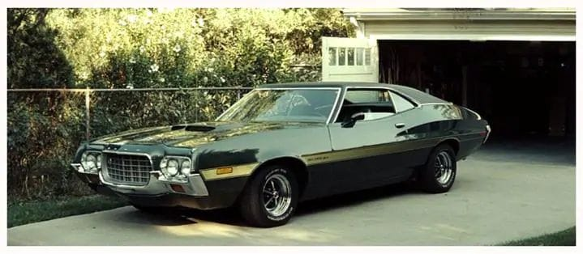

Gran Torino
In the movie Gran Torino, we are introduced to the character Walt Kowalski, he is portrayed as a racist,
prejudice and bitter old man. Walt is a war veteran from the Korean War, this is shown extensively
as his neighbourhood begins to fill with Hmong people. One of his neighbours,
Thao, tries to steal his car, a Gran Torino that he has been restoring. Thao was pressured into stealing the car by
his cousin to get into a gang. Walt catches Thao in his garage late one night and stops him from
stealing the car with his gun. The gang attacks Thao after he fails to steal the car, but Walt
fights off the gang, causing Thao’s family to bring him dishes of Hmong food and thank him repeatedly.
This is the first time Walt is shown as the good guy and starts him on a road to helping and appreciating
his neighbours. Walt quickly changes from the evil in the story to the hero, two juxtaposed ideas.
During the movie, Walt saves Thao’s sister, Sue, from gang members and takes her home safely,
this is another point that he is shown as a hero in the story. Walt decides to help Thao get a job
and gives him dating and conversation advice. Walt stands up for Thao when he is beaten
on his way home from work by the gang members, holding one of them at gunpoint
and telling him to send a message to the rest of the gang. This causes the gang to drive-by shoot
the Hmong family’s house and beat and rape Sue. Walt decides to go to the gang’s
house and influences them to kill him, causing all of the gang members to get arrested. Walt dies
in the end, but he saves the Hmong family from terrorization by the gang. He sacrificed himself
for the family, even though at the beginning of the movie, he would’ve let them die without any second thoughts.
